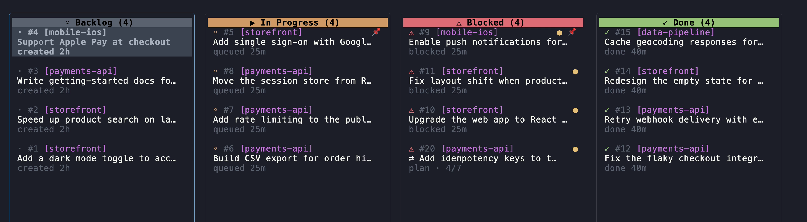
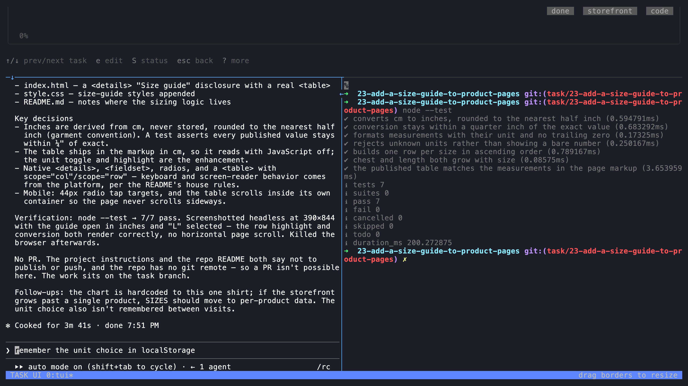
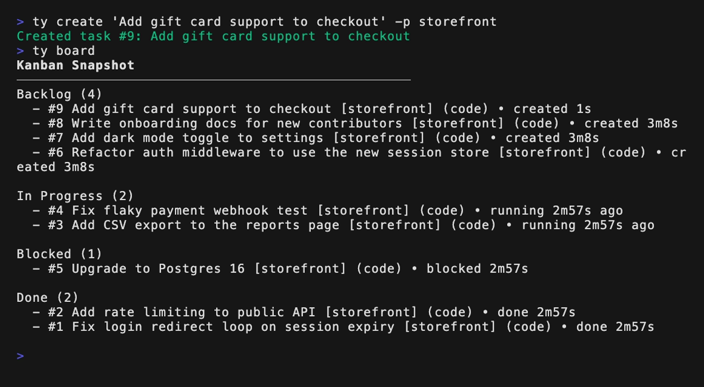
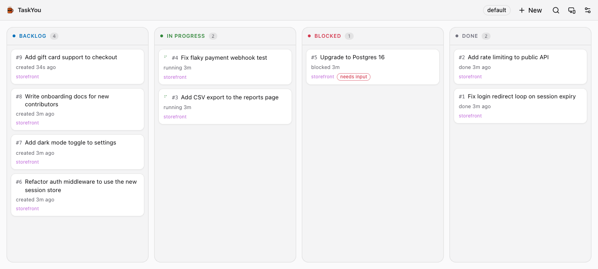

TaskYou reference
Start with your first task or choose a workflow. This manual covers the full command surface and configuration.
Find what you need
- Terminal interface and keyboard shortcuts
- Desktop and browser installation
- Workflows, routines, and plugins
- CLI commands and daemon management
- Executors and task lifecycle
- Project configuration and worktree setup
- SSH access and deployment
The TUI — first class
The terminal UI is TaskYou's primary interface — everything ships here first. Launch it with ty.
Kanban Board

{kind=link}
Task Detail View

{kind=link}
Workflow handoff
 The plan step is done; its dependent implementation task is processing.
The plan step is done; its dependent implementation task is processing.
New Task Form
 Creating a new task with project selection, type, executor, effort, permissions, and attachments
Creating a new task with project selection, type, executor, effort, permissions, and attachments
The CLI
Everything the TUI can do, the CLI can do too — create, execute, retry, and inspect tasks, read executor output, even send keystrokes to a running executor. That makes TaskYou trivial to drive from scripts, cron jobs, and AI agents.

{kind=link}
See Full CLI Scriptability for the complete command surface.
The GUI

{kind=link}
Just want the GUI? On macOS, install it with one command:
curl -fsSL taskyou.dev/install-macos.sh | bash
This downloads the latest DMG, verifies it, installs TaskYou.app to ~/Applications, and launches it — no Gatekeeper prompts, no sudo. Set TASKYOU_INSTALL_SYSTEM=1 to install to /Applications for all users instead.
Or grab a prebuilt bundle from the latest release:
- macOS:
TaskYou-macos-arm64.dmg(Apple Silicon only) - Linux:
TaskYou-linux-x64.AppImageor.deb
The app is self-contained — it ships its own ty engine and starts the server and daemon for you. Two things must be installed on your machine: tmux (brew install tmux) and at least one executor CLI (e.g. Claude Code).
The macOS bundles are ad-hoc signed but not notarized, so macOS flags DMGs downloaded in a browser on first launch (the install script above avoids this entirely). If you installed from a browser-downloaded DMG, drag TaskYou.app to Applications, then either right-click it → Open → Open, or clear the download quarantine flag:
xattr -dr com.apple.quarantine /Applications/TaskYou.app
The same UI is also served in your browser at http://localhost:8080 whenever ty serve runs with the embedded UI (make build-ui build). Desktop gets a real PTY executor terminal; the browser falls back to a live terminal mirror. Source lives in desktop/.
Features
- Kanban Board - Visual task management with 4 columns (Backlog, In Progress, Blocked, Done)
- Git Worktrees - Each task runs in an isolated worktree, no conflicts between parallel tasks
- Pluggable Executors - Choose between Claude Code, OpenAI Codex, Gemini, Pi, OpenClaw, or OpenCode per task
- Workflows - Turn one goal into a multi-step DAG (e.g. plan → code → parallel review → collect), each step on its own executor/model, advancing automatically (see Workflows)
- Event Hooks & Plugins - Run scripts when tasks change state, or drop in self-contained plugins (see Event Hooks and Plugins)
- Ghost Text Autocomplete - LLM-powered suggestions for task titles and descriptions as you type
- VS Code-style Fuzzy Search - Quick task navigation with smart matching (e.g., "dsno" matches "diseno website")
- Markdown Rendering - Task descriptions render with proper formatting in the detail view
- Real-time Updates - Watch tasks execute live
- Running Process Indicator - Green dot (
●) shows which tasks have active shell processes (servers, watchers, etc.) - Auto-cleanup - Automatic cleanup of Claude processes for completed tasks (see maintenance commands for config cleanup)
- Fully Scriptable CLI - 100% of Task You is controllable via CLI—agents can manage tasks, read executor output, and send input to running executors programmatically (see Full CLI Scriptability)
- SSH Access - Run as an SSH server to access your tasks from anywhere (see SSH Access & Deployment)
- Project Context Caching - AI agents automatically cache codebase exploration results and reuse them across tasks, eliminating redundant exploration (see Project Context)
- Shell Completion - Tab completion for commands, task IDs, projects, statuses, and flags in bash, zsh, fish, and PowerShell (see Shell Completion)
Workflows
A workflow turns a single goal into a small DAG of step tasks that run on one shared git branch, each routed to its own executor and model, advancing automatically. Steps are sequential where they depend on each other and parallel where they don't.
Workflows come from two places: ones you install from a plugin (grab battle-tested ones like rpi with ty plugins add) and YAML files you write yourself. Nothing is compiled into the binary. For example, a plan-code-review workflow — shipped as an example plugin under examples/plugins/:
Plan ──▶ Code ──▶ Review A ─┐
Review B ─┴─▶ Collect ──▶ PR
| Step | Model | Job |
|---|---|---|
| Plan | Opus | Explore, write PLAN.md, push. No code. |
| Code | Sonnet | Implement the plan, push. |
| Review A, Review B | Opus, Sonnet | Two independent reviewers in parallel — different models + independent context catch different issues and avoid self-review bias. |
| Collect | Sonnet | Read both reviews, apply the fixes worth applying, open the PR. |
Steps advance with no human in the loop; a workflow only pauses when a step genuinely needs one — the final step opens a PR (landing in blocked for a human merge) or a step asks for input.
Running a workflow
# CLI — pick the kind with -d (there is no default workflow)
ty pipeline "Add rate limiting to the API" -p myapp -d plan-code-review
ty pipeline --list # show available workflows (the YAML files)
ty pipeline "..." -d <kind> --no-execute # stage without starting
# TUI: in the new-task form (n), pick it in the "Kind" selector (types and workflows in one list).
On the board, a workflow shows as a single card (⇄ goal · Review ∥ · 3/5) instead of one card per step. It needs a project that uses git worktrees and has a remote to push to.
Authoring workflows
Workflows are plain YAML files — one per workflow — in ~/.config/task/workflows/*.yaml (override with $TY_WORKFLOWS_DIR), or per-project in .taskyou/workflows/. The file name is the kind name. You write only what each step does and its deps; the git handoff (which branch to push to, when to open the PR) is derived from the step's position in the DAG.
name: build-and-qa
description: Plan, build, then security review and QA in parallel, then finalize.
steps:
- {name: Plan, model: opus, prompt: "Design a plan for {{goal}}; write PLAN.md."}
- {name: Build, deps: [Plan], prompt: "Implement the plan."}
- {name: Security, deps: [Build], prompt: "Security review; write findings to security.md."}
- {name: QA, deps: [Build], prompt: "Exercise the change; write results to qa.md."}
- {name: Finalize, deps: [Security, QA], prompt: "Address the findings and finalize."}
Two steps with the same deps run in parallel; a step depending on several joins them; multiple root steps (no deps) are parallel entry points (e.g. try 3 approaches at once).
# Author a workflow from a plain-English description (LLM → YAML you can edit)
ty pipeline new "spike three approaches, pick the best, build it, review and test in parallel"
# Eject any workflow — built-in, plugin, or installed — to a local YAML file to tweak its models / prompts / steps
ty pipeline edit rpi # writes ~/.config/task/workflows/rpi.yaml (shadows the built-in)
Custom workflows appear in ty pipeline --list, the --definition flag, and the TUI new-task selector automatically. Configuration lives entirely in these files — edit them by hand any time.
Reality gates — bind a step to your build and tests
By default a step is "done" when its agent says so. Add a verify: command and that
claim has to survive contact with reality first: when the step tries to complete,
TaskYou runs the command in the worktree and only advances the workflow if it
passes (exit 0) — on the agent's own signal and on the daemon's git-completion
sweep, so there's no path around it.
steps:
- name: implement
verify: go build ./... && go test ./... # must be green before the DAG advances
prompt: "Implement the plan."
A failing check keeps the step running and hands the command's output back to the
agent, so it fixes the real problem instead of reporting a success it doesn't have.
It's the antidote to an agent marking a step done on a red build — and it's what lets
a simplify step cut a change down while the tests stay the safety net.
Kinds: a task type and a workflow are the same thing
A kind is what you pick when you make a task — code, writing, thinking, plan-code-review, rpi, or any you add. There is no separate "workflow" you choose instead: the same pick runs as a single task when nothing defines steps for that name, and as a multi-step workflow when a definition with steps exists for it.
pick "code" → single task (a kind with instructions, no steps)
pick "plan-code-review" → workflow (a kind whose definition adds steps)
Picking a kind resolves by name, and two sources answer to that name — a definition wins over a DB task type:
| Source | Where it lives | What it gives the kind |
|---|---|---|
| Definition | plugin workflows/ → global ~/.config/task/workflows/ → project .taskyou/workflows/ (nothing is compiled into the binary) |
steps (→ workflow), or just instructions (→ single task) |
| DB task type | the tasks database (code, writing, thinking, plus any you add) |
instructions (→ single task) |
Definitions are layered lowest-to-highest and a later layer shadows an earlier one by name, so your own ~/.config/task/workflows/rpi.yaml overrides the built-in rpi, and a project file overrides everything. ty pipeline --list shows them all, labelled built-in or custom. Adding steps is the only thing that makes a kind a workflow: drop a code.yaml with steps beside the code type and that same pick upgrades from a single task to a DAG.
A workflow's steps can run other kinds by name — and if a referenced kind is itself a workflow (has a file), its steps are inlined at build time, so you compose big flows from small ones:
# ~/.config/task/workflows/ship.yaml
name: ship
steps:
- {name: Build, kind: plan-code-review} # a whole workflow, inlined
- {name: QA, kind: code, deps: [Build]} # a DB kind → sets the step's type
- {name: Deploy, prompt: "Deploy it.", deps: [QA]}
A step's kind: sets that step's task type, so the kind's instructions apply — code, writing, or any kind is referenceable with no extra wiring. Cycles and runaway nesting are rejected at build time.
Project Context
TaskYou implements intelligent codebase caching to make AI agents dramatically more efficient across multiple tasks in the same project.
How It Works
When an AI agent starts a task, it can:
- Check for cached context via
taskyou_get_project_contextMCP tool - Use existing context if available, skipping redundant exploration
- Explore once and save via
taskyou_set_project_contextfor future tasks
This cached context is stored in the projects.context database column and persists across all tasks in that project.
Benefits
- Faster task startup - No need to re-explore the codebase on every task
- Consistent understanding - All tasks share the same baseline knowledge
- Token efficiency - Avoids burning tokens on repeated exploration
- Better continuity - Agents build on previous learnings
Example Usage
When an agent starts a task, it first checks for context:
Agent: taskyou_get_project_context()
TaskYou: "## Cached Project Context
This is a Go project using:
- Bubble Tea for TUI
- SQLite for storage
- Charm libraries for styling
Key directories:
- internal/db/ - Database layer
- internal/executor/ - Task execution
- internal/ui/ - UI components
..."
If no context exists, the agent explores once and saves it:
Agent: [explores codebase]
Agent: taskyou_set_project_context("...")
TaskYou: "Project context saved. Future tasks will use this."
Best Practices
What to include in context:
- Project structure and key directories
- Tech stack and frameworks used
- Coding conventions and patterns
- Important files and their purposes
- Common development workflows
When to update:
- After major refactorings
- When new patterns are introduced
- After significant file reorganization
- When the tech stack changes
Context is per-project - Each project maintains its own cached context, preventing cross-contamination.
Related Features
- Task types can have their own instructions that complement project context
- Project-level instructions (in the database) add project-specific guidance
- Both are automatically included in agent prompts alongside cached context
See the agent orchestration guide for using the CLI from an agent.
Prerequisites
- Go 1.26.0+ - Required to build the project
Using mise (recommended)
If you use mise for dependency management, simply run:
mise install
This will install the correct Go version automatically.
Manual installation
Install Go 1.26.0 or later from go.dev/dl.
Installation
Quick Install (recommended)
curl -fsSL taskyou.dev/install.sh | bash
This downloads the latest release and installs ty (with taskyou as an alias) to ~/.local/bin.
You can also specify a custom install directory:
curl -fsSL https://taskyou.dev/install.sh | INSTALL_DIR=~/.local/bin bash
Build from source
git clone https://github.com/bborn/taskyou
cd taskyou
make build
Usage
# Launch the TUI (auto-starts background daemon)
./bin/ty
Daemon management
./bin/ty daemon # Start daemon manually
./bin/ty daemon stop # Stop the daemon
./bin/ty daemon status # Check daemon status
Restarting without closing terminals
ty restart restarts the daemon and asks local TUIs using the same database to
reload the current binary in place. Their tmux sessions stay open. Task selection,
board filter, and the open detail view are restored, and borrowed agent panes are
returned before reloading. Unsaved forms and pending task saves defer the reload.
TUIs started with an older build that lacks cooperative reload remain running;
reopen those once with the updated build to enable future automatic reloads.
POST /api/tui/reload requests the same cooperative TUI reload through the HTTP API.
ty daemon restart only restarts the daemon. ty restart --hard remains an explicit
destructive reset that kills TaskYou tmux sessions.
Maintenance commands
./bin/ty purge-claude-config # Remove stale ~/.claude.json entries
./bin/ty purge-claude-config --dry-run # Preview what would be removed
./bin/ty claudes cleanup # Kill orphaned Claude processes
Full CLI Scriptability
Task You is 100% scriptable. Every action you can perform in the TUI is available via the ty CLI, making it trivial for AI agents, scripts, or external orchestrators to control your entire task queue programmatically.
This includes:
- Board state -
ty board --jsonreturns the full Kanban snapshot - Task management -
ty create,ty execute,ty retry,ty status,ty pin,ty close,ty archive,ty delete - Direct executor interaction -
ty inputsends keystrokes/text to running executors,ty outputreads their output - Session management -
ty sessions list,ty sessions cleanup
Because agents can send input to running executors via ty input, they can answer prompts, confirm dialogs, navigate menus, and fully control tasks mid-execution—no human intervention required.
See docs/orchestrator.md for a complete guide to building your own orchestration agent.
Auto-cleanup: The daemon automatically cleans up Claude processes for tasks that have been done for more than 30 minutes, preventing memory bloat from orphaned processes.
Note: Automatic cleanup currently only works for the Claude executor. When using other executors (Codex, Gemini, Pi, etc.), you may need to manually clean up processes using
ty sessions cleanupto prevent memory bloat.
AI Agent Skill
Task You includes a /taskyou skill that teaches any AI agent how to orchestrate your task queue via CLI.
Automatic availability: The skill is automatically available when working inside the Task You project directory (via skills/taskyou/).
Global installation: To use the skill from any project:
./scripts/install-skill.sh
Once available, you can ask Claude things like:
- "Show me my task board"
- "Execute the top priority task"
- "What's blocked right now?"
- "Create a task to fix the login bug"
The skill works with Claude Code, Codex, Gemini, or any agent that can execute shell commands. It provides structured guidance for common orchestration patterns without needing to memorize CLI flags.
Keyboard Shortcuts
Kanban Board
| Key | Action |
|---|---|
←/→ or h/l |
Navigate columns |
↑/↓ or j/k |
Navigate tasks |
Enter |
View task details |
n |
Create new task |
x |
Execute (queue) task |
r |
Retry task with feedback |
c |
Close task |
a |
Archive task |
d |
Delete task |
t |
Pin/unpin task |
o |
Open task's working directory |
p |
Command palette (fuzzy search) |
/ |
Filter tasks |
s |
Settings |
? |
Toggle help |
q |
Quit |
Task Detail View
| Key | Action |
|---|---|
e |
Edit task |
x |
Execute task |
r |
Retry with feedback |
S |
Change task status |
t |
Pin/unpin task |
! |
Toggle dangerous/safe mode |
\ |
Toggle shell pane visibility |
Shift+↑/↓ |
Switch between panes |
Alt+Shift+↑/↓ |
Jump to prev/next task (stays in executor pane) |
c |
Close task |
a |
Archive task |
d |
Delete task |
Esc |
Back to kanban |
Task Form (Autocomplete)
| Key | Action |
|---|---|
Tab |
Accept ghost text suggestion |
Escape |
Dismiss suggestion |
Ctrl+Space |
Manually trigger suggestion |
Task Lifecycle
backlog → queued → processing → done
↘ blocked (needs input)
| Status | Description |
|---|---|
backlog |
Created but not started |
queued |
Waiting to be processed |
processing |
Currently being executed |
blocked |
Needs input/clarification |
done |
Completed |
Task Executors
Task You supports multiple AI executors for processing tasks. You can choose the executor when creating or editing a task.
Developers who want to add another backend should read
docs/executor_interface.mdfor the fullTaskExecutorcontract.
| Executor | CLI | Description |
|---|---|---|
| Claude (default) | claude |
Claude Code - Anthropic's coding agent with session resumption |
| Codex | codex |
OpenAI Codex CLI - OpenAI's coding assistant |
| Gemini | gemini |
Gemini CLI - Google's Gemini-based coding assistant |
| Grok | grok |
Grok CLI - xAI's coding assistant with session resumption |
| Cursor | agent / cursor-agent |
Cursor CLI - Cursor's coding agent with session resumption |
| Pi | pi |
Pi Coding Agent - Multi-provider AI coding agent with session continuity |
| OpenCode | opencode |
OpenCode - Open-source AI coding assistant with multi-LLM support |
| OpenClaw | openclaw |
OpenClaw - Open-source personal AI assistant with session resumption |
All executors run in tmux windows with the same worktree isolation and environment variables. The main differences:
- Claude Code, Grok, Cursor, Pi, and OpenClaw support session resumption - when you retry a task, they continue with full conversation history
- Codex and Gemini start fresh on each execution but receive the full prompt with any feedback
- OpenCode does not support session resumption
Installing Executors
At least one executor CLI must be installed for tasks to run:
# Claude Code (recommended)
# See https://claude.ai/claude-code for installation
# OpenAI Codex CLI
npm install -g @openai/codex
# Google Gemini CLI
# See https://ai.google.dev/gemini-api/docs/cli for installation instructions
# Grok CLI
curl -fsSL https://x.ai/cli/install.sh | bash
# Cursor Agent CLI
curl https://cursor.com/install -fsS | bash
# Pi Coding Agent
npm install -g @mariozechner/pi-coding-agent
# OpenClaw
npm install -g openclaw@latest
openclaw onboard # Run setup wizard
How Task Executors Work
Understanding how Task You manages executor processes helps you debug issues and work with running tasks.
tmux-Based Architecture
Task executors run inside tmux windows within a daemon session:
task-daemon-{PID} (tmux session)
├── _placeholder (keeps session alive)
├── task-123 (window for task 123)
│ ├── pane 0: Executor (left - Claude/Codex output)
│ └── pane 1: Shell (right - workdir access)
├── task-124 (window for task 124)
└── ...
When you execute a task:
- The daemon ensures a
task-daemon-*session exists - Creates a new tmux window named
task-{ID} - Spawns the configured executor (Claude or Codex) with environment variables and the task prompt
- Creates a shell pane for manual intervention
Session Tracking
Each task tracks its executor state in the database:
| Field | Purpose |
|---|---|
SessionID |
Executor session ID (Claude only, for resumption) |
TmuxWindowID |
Unique window target for tmux commands |
daemon_session |
Which task-daemon-* owns this task |
Port |
Unique port (3100-4099) for the worktree |
Managing Executor Processes
Inside the TUI:
- The green dot (
●) indicates tasks with active processes
From the command line:
# List all running executor processes
./bin/ty sessions list
# Kill orphaned executor processes
./bin/ty sessions cleanup
Direct executor interaction:
# See what the executor is outputting
./bin/ty output <id> # Last 50 lines
./bin/ty output <id> --lines 100 # More history
# Send input directly to a running executor
./bin/ty input <id> "yes" # Send text + Enter
./bin/ty input <id> --enter # Just press Enter (confirm prompts)
./bin/ty input <id> --key Down --enter # Navigate + confirm
echo "continue" | ./bin/ty input <id> # Pipe input
Inside a task worktree:
When working in a task's worktree directory, you can interact with the executor directly. For Claude tasks:
cd /path/to/project/.task-worktrees/123-my-task/
# List Claude sessions (shows any spawned for this directory)
claude -r
# Resume a specific session
claude --resume {session-id}
The claude -r command shows Claude sessions associated with the current directory. This is useful when:
- Debugging why a task got stuck
- Continuing work manually after a task completes
- Checking what the executor was doing in a specific task
Session Resumption (Claude Only)
Claude Code supports session resumption - when you retry a task or press R, the executor reconnects to the existing conversation:
- First execution: Claude starts fresh, prints a session ID
- Task You captures: The session ID is stored in the database
- On retry/resume: Runs
claude --resume {sessionID}with your feedback - Full context preserved: Claude sees the entire conversation history
This means when you retry a blocked task with feedback, Claude doesn't start over—it continues the conversation with full awareness of what it already tried.
Note: Codex and Gemini do not support session resumption. When retrying these tasks, they receive the full prompt including any feedback, but start a fresh session. Claude Code and OpenClaw support full session resumption.
Lifecycle & Cleanup
| Event | Behavior |
|---|---|
| Task completes | Process stays alive for 30 minutes, then auto-killed |
| Task blocked | Process suspends after 6 hours of idle time |
Task deleted (d) |
Window killed, task trashed — worktree kept on disk so it can be restored |
| Trash retention expires | Worktree removed, teardown script runs (default 14 days) |
| Task archived, or stale-worktree sweep | Worktree archived to a git ref and removed, teardown script runs (sweep default: 24h after completion) |
| Daemon restart | Orphaned windows are cleaned up on next poll |
Routines
Routines are named, unattended agent runs — scouts and monitors that watch
something on a schedule and feed your queue. TaskYou deliberately has no
scheduler: trigger runs with ty run <name> from cron, launchd, or anything
else that can run a command. TaskYou owns everything around the run: state,
logs, history, and failure alerting.
A routine is a directory under ~/.config/task/routines/<name>/:
prompt.md— the agent prompt, with optional frontmatter (model,project,timeout,permission-mode)env.sh— optional; sourced before each run for secrets and fail-fast checks (a non-zero exit fails the run before the agent starts)
ty routines create my-scout # scaffold a new routine
ty run my-scout # run it now (cron/launchd call this too)
ty routines # health: last run, status, duration
ty routines show my-scout # config + recent run history
ty routines logs my-scout # full log of the latest run
ty routines edit my-scout # open prompt.md in $EDITOR (re-validates on save)
ty routines schedule my-scout --every 30m # register with the OS scheduler
ty routines unschedule my-scout # remove the ty-managed scheduler entry
ty routines disable my-scout # pause (ty run becomes a no-op)
ty routines delete my-scout # remove routine, schedule, state, run history
In the TUI, press u for the routines fleet-health view: last run status per
routine, enter to read the latest run log, d to enable/disable.
schedule writes the OS scheduler config and hands over the clock: a launchd
agent on macOS (com.taskyou.routine.<name>) or a tagged crontab line, with
your PATH captured so the agent can find ty and claude. ty keeps no
schedule state of its own — show and the TUI read the OS entry live, so
nothing can drift. Use --cron "0 8 * * 1-5" for calendar cadences, and
--print to emit the config without installing it. Prefer your own
scheduler? Skip schedule entirely and point anything at ty run <name>.
Each run executes claude -p headlessly (default model: sonnet, default
timeout: 30m) with the prompt on stdin, working directory set to the routine's
private state dir (~/.local/share/task/routines/<name>/, also exported as
$ROUTINE_STATE_DIR) so cross-run state like seen-IDs has an obvious home.
Output is logged per run and recorded in run history.
When a run fails — agent error, env.sh failure (expired credentials), or
timeout — TaskYou pins a Routine failed: <name> task to your board (deduped
while one is open) and fires a routine.failed event hook. Silent failure is
the one thing a routine is not allowed to do.
Event Hooks
TaskYou runs scripts in ~/.config/task/hooks/ when tasks change state.
Setup
# Create a hook for completed tasks
cat > ~/.config/task/hooks/task.completed << 'EOF'
#!/bin/bash
osascript -e "display notification \"$TASK_TITLE\" with title \"Task Completed\""
EOF
chmod +x ~/.config/task/hooks/task.completed
Available Events
| Event | When Emitted |
|---|---|
task.created |
New task created |
task.updated |
Task fields changed (including status transitions) |
task.deleted |
Task removed |
task.started |
Execution begins |
task.blocked |
Task needs user input (or agent failed) |
task.completed |
Agent finished successfully (task moves to backlog for human review) |
task.failed |
Agent execution failed |
task.worktree_ready |
Worktree set up and ready for agent |
Environment Variables
TASK_ID # Task ID
TASK_TITLE # Task title
TASK_STATUS # Current status
TASK_PROJECT # Project name
TASK_EVENT # Event type
TASK_TIMESTAMP # ISO 8601 timestamp
See examples/hooks/ for examples.
Distribute agents with ty-on
Run tasks on your desktop or servers while managing them from the same TaskYou board. The optional ty-on plugin picks a machine for each task; TaskYou creates an isolated worktree there, starts the agent over SSH, and tracks its progress. Remote execution supports Claude and Codex.
First, prepare each machine with SSH access, a checkout of your project, Git, tmux, and an authenticated Claude or Codex executable on its login shell PATH. TaskYou does not clone the initial checkout or copy agent credentials for you.
Add the machines to ~/.config/on/hosts.yaml. Repository keys must match the
project name in TaskYou; paths point to existing checkouts on those machines:
hosts:
desktop:
ssh: desktop
capabilities: ["executor:claude", "executor:codex"]
repos:
storefront: ~/Projects/storefront
server:
ssh: dev-server
capabilities: ["executor:claude", "executor:codex"]
repos:
storefront: ~/projects/storefront
Install the on CLI to compare available memory across multiple machines. Then, from a TaskYou source checkout with Go installed:
make install-ty-on
ty plugins list
Queue tasks as usual. ty-on selects a host configured for the task's project and
executor. With one eligible host, it selects that host directly. With several,
it uses on ls to pick the reachable host with the most free memory. Task detail
shows the selected host and the reason. You can also choose a host yourself with
Change host in the desktop/browser, @ in the TUI, or ty place in the CLI.
Tasks fall back to local execution when no remote placement is available. To
require a remote machine for a project, add this to its .taskyou.yml:
placement:
remote_required: true
With that setting, an unavailable remote destination stops the launch instead of starting an agent locally. See the ty-on setup and placement rules and remote execution guide for details.
Plugins
A plugin is a self-contained directory under ~/.config/task/plugins/ with a
plugin.yaml manifest. It can carry any mix of three things:
- workflows (
workflows/*.yaml) — newty pipeline -d <name>definitions - hooks — scripts that fire on task events. Unlike the one-script-per-event hooks dir above, any number of plugins can handle the same event and all of them run
- actions — user-invoked commands (
ty plugins run <plugin> <action>)
One event is different: task.placement is consulted, not merely notified.
Just before an executor spawns, ty asks any installed placement handler where the
task should run — request on stdin, answer on stdout — and runs it there. An empty
answer (and every way a handler can fail) means "run locally", which is what
happens for everyone who has no placement plugin installed: nothing is asked, and
nothing changes.
A placed task is watched over one standing connection per host rather than one
poller per task, so a fleet of hundreds costs a handful of connections. ty holds
that connection outbound — nothing listens on your machine and no port is opened.
The agent reports its own outcome through it (.ty/signal done "…"), so a remote
task finishes when it says it has finished, rather than when it has been quiet
long enough to look finished.
Remote tasks support the workdir shell in every interface: \ toggles it in
TUI detail view, and the desktop/browser terminal has a Shell tab. The shell
runs on the placed host with the task's environment and survives closing the
view. Shift-arrow keys cycle the TUI, agent, and shell panes; Alt-Shift-Up/Down
switch tasks. Inside an attached remote pane, Ctrl-a is the remote tmux
prefix. Desktop and browser remote terminals use the HTTP terminal bridge.
See docs/plugins.md and the reference resolver in extensions/ty-on.
Task placement is also available from the task detail view in the desktop and
browser, and with @ in the TUI. See remote execution
for executor eligibility, required remote placement, connection health, and
shared HTTP placement endpoints.
Install one — or a whole collection, since a single git repo can hold many plugins — with one command:
ty plugins add https://github.com/taskyou/plugins # clone & install the collection
ty plugins list # see what they provide
Re-run the same command any time to update (it git pulls). Or drop a directory in
by hand.
Why you'd care: the community collection
github.com/taskyou/plugins is the fastest
way to feel what workflows-as-plugins buys you — install it and these show up in
ty pipeline -d:
| Workflow | What it does |
|---|---|
rpi |
Turns a goal into a PR: neutral research → goal-blind investigation → an approach you approve (human gate) → a plan you approve (human gate) → implement + simplify that must pass your build/tests (reality gate) → PR. A human okays the approach; the machine proves the code. |
plan-code-review |
Plan → code → two independent reviewers in parallel → collect → PR. Different models with independent context catch different issues. |
arc-solve |
An agent that plays a live ARC-AGI-3 game and beats a level — the verify gate replays its solution against the real game, so a win can't be faked. (recorded run + GIF.) |
That last one is the point in miniature: a workflow whose completion is bound to a result the gate re-checks against reality, packaged so anyone gets it with one command.
See the collection README to browse or
contribute, docs/plugins.md for the manifest format,
examples/plugins/ for more (desktop-notify, slack, worktree),
and docs/plugin-ideas.md for ideas.
Configuration
Settings
Manage settings with ty settings:
ty settings # View all settings
ty settings set <key> <value> # Set a value
| Setting | Description |
|---|---|
anthropic_api_key |
API key for ghost text autocomplete (optional, uses API credits) |
autocomplete_enabled |
Enable/disable autocomplete (true/false) |
Ghost Text Autocomplete
LLM-powered suggestions appear as you type task titles and descriptions, similar to GitHub Copilot:
- Title suggestions - Autocomplete as you type the task title
- Body suggestions - Auto-suggest a description when you tab from the title to an empty body field
- Cursor-aware - Ghost text renders at cursor position for natural editing
- Smart caching - Recent completions are cached for instant responses
Setup:
ty settings set anthropic_api_key sk-ant-your-key-here
Controls:
Tab- Accept suggestionEscape- Dismiss suggestionCtrl+Space- Manually trigger suggestion
Get an API key at console.anthropic.com. This is optional and uses your API credits.
Environment Variables
| Variable | Description | Default |
|---|---|---|
WORKTREE_DB_PATH |
SQLite database path | ~/.local/share/task/tasks.db |
ANTHROPIC_API_KEY |
Fallback for autocomplete if not set in settings | - |
.taskyou.yml Configuration
You can configure per-project settings by creating a .taskyou.yml file in your project root:
worktree:
init_script: bin/worktree-setup
Supported filenames (in order of precedence):
.taskyou.yml.taskyou.yamltaskyou.ymltaskyou.yaml
Configuration options:
| Field | Description | Example |
|---|---|---|
worktree.init_script |
Path to script that runs after worktree creation (relative or absolute) | bin/worktree-setup |
worktree.teardown_script |
Path to script that runs before a worktree is removed — on archive as well as delete (relative or absolute) | bin/worktree-teardown |
Projects
Configure projects in Settings (s):
- Name - Project identifier (e.g.,
myproject) - Path - Local filesystem path to git repo
- Aliases - Short names for quick reference
- Instructions - Project-specific AI instructions
- Claude Config Dir - Optional override for
CLAUDE_CONFIG_DIR(use different Claude accounts per project)
Worktrees
Tasks run in isolated git worktrees at ~/.local/share/task/worktrees/{project}/task-{id}. This allows multiple tasks to run in parallel without conflicts. Press o to open a task's worktree.
Worktree Setup Script
You can configure a script to run automatically after each worktree is created. The setup script runs:
- After the git worktree is created
- Before the AI executor (Claude/Codex) starts working on the task
- When reusing an existing worktree that has already been checked out
This is useful for:
- Installing dependencies
- Setting up databases
- Copying configuration files
- Running migrations
Two ways to configure:
- Conventional location - Create an executable script at
bin/worktree-setup:
#!/bin/bash
# Example: bin/worktree-setup
bundle install
cp config/database.yml.example config/database.yml
- Custom location - Specify in
.taskyou.yml:
worktree:
init_script: scripts/my-setup.sh
The script runs in the worktree directory and has access to all worktree environment variables (WORKTREE_TASK_ID, WORKTREE_PORT, WORKTREE_PATH).
Worktree Teardown Script
You can configure a script to run automatically just before a worktree is removed. This is useful for releasing per-worktree resources:
- Dropping task-specific databases
- Freeing an allocated Redis DB, S3 prefix, or dev-server symlink
- Stopping background services and docker containers
- Removing temporary files
TaskYou removes a worktree in one of two ways — archive (worktree state, including uncommitted changes, is first saved to a git ref so the task can be unarchived later with everything restored) and delete — and the teardown script runs on both.
When it runs:
| Trigger | How the worktree goes away |
|---|---|
Automatic stale-worktree sweep — the daemon archives and removes worktrees for done/archived tasks whose completion is older than the cleanup max age (default 24h, setting worktree_cleanup_max_age; set to 0/disabled to turn off) |
archive |
ty worktrees cleanup (--max-age 0 sweeps every done/archived worktree now, --dry-run previews) |
archive |
Archiving a task in the TUI (a) |
archive |
Trash sweep — a trashed task's worktree is removed once the retention window expires (default 14 days, setting trash_retention) |
delete |
ty delete --hard |
delete |
Moving a task to another project (ty move, or the TUI move action) — the old worktree is removed |
delete |
So a finished task releases its resources on its own: by default the sweep archives and tears down its worktree ~24 hours after it completes. You do not need to build a separate reaper.
Note that d in the TUI and plain ty delete trash a task rather than destroying it — the worktree is deliberately left on disk so ty restore works. Teardown for those runs later, when the trash sweep hard-deletes the task (or immediately if you pass --hard).
When it does not run:
- You remove the worktree yourself, outside TaskYou (
git worktree remove,rm -rf) — TaskYou never sees it happen. - Projects that don't use worktrees (the task runs in the project directory itself). Nothing per-task was created, so nothing is torn down.
Two ways to configure:
- Conventional location - Create an executable script at
bin/worktree-teardown:
#!/bin/bash
# Example: bin/worktree-teardown
bin/rails db:drop
- Custom location - Specify in
.taskyou.yml:
worktree:
teardown_script: scripts/my-teardown.sh
The script is resolved from the project root but executed with the worktree as its working directory, with the same environment variables as the setup script (WORKTREE_TASK_ID, WORKTREE_PORT, WORKTREE_PATH). Its output is streamed into the task log, prefixed with [teardown].
Your teardown script must not refuse to run. A non-zero exit is logged as a warning and TaskYou removes the worktree anyway — cleanup never fails on your script. A script that guards itself (bailing out when the worktree is dirty, for example) will therefore leak whatever it was supposed to release, silently. Write it to be unconditional and idempotent. TaskYou also waits for the script to finish with no timeout, so keep it quick.
Note: Teardown is tied to worktree removal, not to task status, so it happens after the max-age delay rather than the moment a task finishes. If you need cleanup at the exact moment a task completes, use Event Hooks on the task.completed event — but be aware the worktree is still live at that point (the agent's changes may not be merged yet), and the teardown script will still run later when the worktree is actually removed.
Running Applications in Worktrees
Each task provides environment variables that applications can use to run in isolation:
| Variable | Description | Example |
|---|---|---|
WORKTREE_TASK_ID |
Unique task identifier | 207 |
WORKTREE_PORT |
Unique port (3100-4099) | 3100 |
WORKTREE_PATH |
Path to the worktree | /path/to/project/.task-worktrees/207-my-task |
Loading Environment Variables
Each worktree includes a .envrc file with these variables. To load them:
- With direnv (recommended): Variables load automatically when you
cdinto the worktree. Rundirenv allowthe first time. - Without direnv: Run
source .envrcmanually.
These variables allow multiple tasks to run simultaneously without conflicts on ports or databases.
Example: Rails Application
Configure your Rails app to use worktree variables for complete isolation:
config/puma.rb:
port ENV.fetch("WORKTREE_PORT", 3000)
config/database.yml:
development:
database: myapp_dev<%= ENV['WORKTREE_TASK_ID'] ? "_task#{ENV['WORKTREE_TASK_ID']}" : "" %>
Procfile.dev:
web: bin/rails server -p ${WORKTREE_PORT:-3000}
bin/worktree-setup:
#!/bin/bash
set -e
# Install dependencies
bundle install
# Create isolated database for this task
bin/rails db:create db:migrate
bin/worktree-teardown:
#!/bin/bash
# Drop the task-specific database
bin/rails db:drop
Now the AI executor (Claude or Codex) can:
- Run your app with
bin/dev - Access it at
http://localhost:$WORKTREE_PORT - Work on multiple tasks in parallel without database or port conflicts
Example: Node.js Application
package.json:
{
"scripts": {
"dev": "next dev -p ${WORKTREE_PORT:-3000}"
}
}
bin/worktree-setup:
#!/bin/bash
npm install
cp .env.example .env.local
Shell Completion
TaskYou supports tab completion for all CLI commands, subcommands, flags, and dynamic values (task IDs, project names, statuses, etc.).
Setup
Zsh (macOS default):
# Enable completion if not already done:
echo "autoload -U compinit; compinit" >> ~/.zshrc
# Generate and install the completion script:
ty completion zsh > "${fpath[1]}/_ty"
# Restart your shell or run:
source ~/.zshrc
Bash:
# Linux:
ty completion bash > /etc/bash_completion.d/ty
# macOS (with Homebrew):
ty completion bash > $(brew --prefix)/etc/bash_completion.d/ty
Fish:
ty completion fish > ~/.config/fish/completions/ty.fish
PowerShell:
ty completion powershell >> $PROFILE
What completes
- Subcommands —
ty <TAB>shows all available commands - Task IDs —
ty show <TAB>lists tasks with their status and title - Statuses —
ty status 42 <TAB>suggests backlog, queued, processing, etc. - Projects —
ty move 42 <TAB>and--project <TAB>complete project names - Task types —
--type <TAB>completes from your configured task types - Executors —
--executor <TAB>suggests claude, codex, gemini, grok, etc. - Settings —
ty settings set <TAB>shows available setting keys
SSH Access & Deployment
Task You can run as an SSH server, allowing you to access your task board from anywhere.
Running the SSH Server
The taskd daemon provides SSH access to the TUI:
# Start SSH server on default port (2222)
./bin/taskd
# Custom port
./bin/taskd -addr :22222
# Custom database location
./bin/taskd -db /path/to/tasks.db
# Custom SSH host key
./bin/taskd -host-key ~/.ssh/custom_key
Once running, connect from any machine:
ssh -p 2222 username@your-server.com
Replace your-server.com with your server's hostname or IP address. The SSH server accepts public key authentication (currently accepts all keys - see Security below).
Deployment
Building for Linux
If deploying from macOS to a Linux server:
make build-linux
This creates Linux binaries in ./bin/.
Installing as a Systemd Service
For persistent SSH access, install taskd as a systemd service:
./scripts/install-service.sh
This creates ~/.config/systemd/user/taskd.service and enables it to start on boot.
Manage the service with:
systemctl --user status taskd # Check status
systemctl --user start taskd # Start
systemctl --user stop taskd # Stop
systemctl --user restart taskd # Restart
journalctl --user -u taskd # View logs
Security
Important: The SSH server currently accepts all public keys. For production use, edit internal/server/ssh.go:
wish.WithPublicKeyAuth(func(ctx ssh.Context, key ssh.PublicKey) bool {
// Compare key fingerprint against allowed list
allowed := map[string]bool{
"SHA256:your-allowed-key-fingerprint": true,
}
return allowed[ssh.FingerprintSHA256(key)]
})
Get your key fingerprint with:
ssh-keygen -lf ~/.ssh/id_ed25519.pub
Password authentication is disabled by default.
Extensions
ty-email
Email interface for TaskYou. Send emails to create tasks, reply to provide input, receive status updates—all from your phone or any email client.
cd extensions/ty-email
go build -o ty-email ./cmd
./ty-email init # Interactive setup wizard
./ty-email serve # Run daemon
See extensions/ty-email/README.md for full documentation.
ty-chrome
Chrome extension for visual product development in a loop. Annotate any page served by a task's dev server (point at elements, draw boxes, comment) and the context — selectors, DOM excerpts, a screenshot with your markers — lands directly in the task's executor, which makes the change while you watch its live output in the side panel. The executor can also see and drive your tab through the browser bridge (screenshot/snapshot/console/click/type) instead of launching its own browser, and the page auto-reloads when it finishes a turn.
{kind=link}
chrome://extensions → Developer mode → Load unpacked → extensions/ty-chrome
ty serve # the extension auto-discovers it
See extensions/ty-chrome/README.md for full documentation.
Development
make build # Build binaries
make test # Run tests
make install # Install to ~/go/bin
Tech Stack
- Bubble Tea - TUI framework
- Lip Gloss - Terminal styling
- Wish - SSH server
- SQLite - Local database